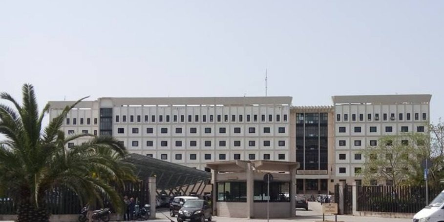

이탈리아 시라쿠사시, 법원 주차장 지붕 태양광 811kWp 전기 팔아 줄 사업자 찾는다…학교 전기로 계획했던 설비

시 추정 연 수입 10만5,000~16만1,000유로(MWh당 80~120유로 가정)…위탁 24개월에 2년 연장 가능, 지금은 관심 표명 접수 단계…판매 수입을 학교에 쓸지는 정하지 않아
이탈리아 시칠리아섬의 시라쿠사시가 법원 청사 주차장 차양 지붕에 설치한 시 소유 태양광(정격 출력 811.44kWp)의 전기를 맡아 팔아 줄 사업자를 찾는 공개 공고안을 담당 부서장 결정으로 승인했다. 이 설비는 원래 시내 학교들의 전기원으로 계획됐지만 여러 해 동안 기술·행정 문제가 잇따랐고, 시는 최근 또 한 차례 특별 보수와 기술 개선 공사를 마쳐 발전 기능을 되살렸다. 시는 생산한 전기를 국가 전력망에 보내고, 판매 업무는 송전망 운영사 테르나(Terna)와 급전 계약을 맺은 자격 있는 사업자에게 맡길 계획이다. 결정문의 추정으로는 시장 전기값이 MWh당 80유로일 때 연 10만5,000유로, 100유로일 때 13만3,000유로, 120유로일 때 16만1,000유로가 시 수입으로 들어오며, 이 계산에는 사업자 보수 연 약 7,000유로(부가세 별도)가 반영됐다. 위탁 기간은 24개월에 2년 더 연장할 수 있고 시에 가장 많은 대가를 내겠다는 제안을 우선하지만, 이번 결정은 사업자들의 관심 표명을 받는 시장 조사를 승인한 것일 뿐 낙찰은 아니다. 판매 수입을 학교 건물에 쓸지, 시 일반 재원으로 넣을지는 이번 결정에 담기지 않았다.
시민에너지 관점
811kWp 주차장 지붕 하나가 시 추정으로 해마다 10만5,000~16만1,000유로를 벌 수 있고, 판매를 맡는 사업자 몫은 약 7,000유로에 그친다는 계산은 공공 지붕 태양광이 지역에 적지 않은 돈이 된다는 것을 보여 준다. 그러나 학교 전기를 위해 계획한 설비의 전기를 시장에 팔기로 하면서도, 이번 결정은 그 수입을 어디에 쓸지 말하지 않는다. 시가 직접 팔면 수익이 어차피 공공에 남는데 굳이 주민이 나설 필요가 있느냐는 물음이 있을 수 있지만, 처음 목적이 흐려지는 것을 막는 힘은 수익을 받을 학교와 주민이 설비 운영과 결산에 직접 참여할 때 생긴다. 국내 공영주차장·공공건물 지붕 태양광도 착공 전에 수익의 쓰임을 조례나 협약으로 묶어 두고, 지역 주민 조직이 운영과 결산을 함께 볼 수 있는 자리를 만들어야 한다.
출처: Siracusa News 2026-10-31 Luca Signorelli 원문 보기
イタリア・シラクサ市、裁判所駐車場の屋根の太陽光811kWpの電力販売を担う事業者を募集…学校の電源として計画された設備
市の推計で年間収入10万5,000～16万1,000ユーロ（1MWhあたり80～120ユーロと仮定）…委託期間24カ月で2年延長可能、現在は関心表明の受付段階…販売収入を学校に充てるかは未定
イタリア・シチリア島のシラクサ市は、裁判所庁舎の駐車場の屋根（日よけ）に設置した市所有の太陽光発電設備（定格出力811.44kWp）の電力を引き受けて販売する事業者を募る公募案を、担当部局長の決定で承認した。この設備はもともと市内の学校の電源として計画されたが、長年にわたり技術面・行政面の問題が続き、市はこのほど改めて特別修繕と技術改良の工事を終えて発電機能を回復させた。市は発電した電力を国の送電網に送り、販売業務は送電系統運用会社テルナ（Terna）と給電契約を結ぶ資格ある事業者に任せる計画だ。決定文の推計では、市場の電力価格が1MWhあたり80ユーロなら年10万5,000ユーロ、100ユーロなら13万3,000ユーロ、120ユーロなら16万1,000ユーロが市の収入になり、この計算には事業者への報酬年約7,000ユーロ（付加価値税別）が織り込まれている。委託期間は24カ月で、さらに2年延長でき、市に最も多くの対価を支払う提案を優先するが、今回の決定は事業者の関心表明を受け付ける市場調査を承認したにすぎず、落札ではない。販売収入を学校の建物に充てるのか、市の一般財源に入れるのかは、今回の決定には盛り込まれていない。
市民エネルギーの視点
811kWpの駐車場の屋根一つが、市の推計で毎年10万5,000～16万1,000ユーロを稼ぎ得て、販売を担う事業者の取り分は約7,000ユーロにとどまるという計算は、公共の屋根の太陽光が地域にとって小さくない収入源になることを示している。しかし学校の電気のために計画した設備の電力を市場で売ることにしながら、今回の決定はその収入を何に使うのかに触れていない。市が自ら売れば収益はどのみち公共に残るのだから住民が乗り出す必要はないという疑問もあり得るが、当初の目的がぼやけるのを防ぐ力は、収益を受け取る学校や住民が設備の運営と決算に直接関わるときに生まれる。韓国の公営駐車場や公共建物の屋根の太陽光も、着工前に収益の使い道を条例や協定で定めておき、地域の住民組織が運営と決算を共に確かめられる場をつくるべきだ。
出典: Siracusa News（シラクサ・ニュース） 2026-10-31 ルカ・シニョレッリ（Luca Signorelli） 原文を読む
意大利锡拉库萨市为法院停车场顶棚811kWp光伏寻找售电运营商…原计划为学校供电的设施
市政府估算年收入10万5,000至16万1,000欧元（假设每兆瓦时80至120欧元）…委托期24个月、可再延长2年，目前处于征集意向阶段…售电收入是否用于学校尚未确定
意大利西西里岛锡拉库萨市以主管部门负责人决定的形式，批准了一份公开公告方案，为安装在法院大楼停车场遮阳棚顶上的市有光伏设施（额定功率811.44kWp）寻找负责管理和销售电力的运营商。这套设施原本计划作为市内各学校的电源，但多年来技术和行政问题接连不断，市政府最近又完成了一轮特别维修和技术改造工程，恢复了发电功能。市政府计划将所发电力送入国家电网，售电业务则交给与输电网运营商Terna签有调度合同的合格运营商。根据决定文件的估算，市场电价为每兆瓦时80欧元时，市政府每年可获收入10万5,000欧元，100欧元时为13万3,000欧元，120欧元时为16万1,000欧元，这一计算已计入每年约7,000欧元（不含增值税）的运营商报酬。委托期为24个月，可再延长2年，将优先选择向市政府支付最高对价的方案，但此次决定只是批准了征集运营商意向的市场调查，并非中标。售电收入是用于学校建筑，还是并入市政一般财政，此次决定并未涉及。
市民能源视角
按照市政府估算，一个811kWp的停车场顶棚每年可带来10万5,000至16万1,000欧元收入，而负责售电的运营商只拿约7,000欧元，这说明公共屋顶光伏能为地方带来可观的收入。然而，在决定将原计划为学校供电的设施所发电力推向市场的同时，此次决定并未说明这笔收入将用于何处。或许有人会问，既然由市政府自己卖电，收益终归留在公共部门，何必让居民参与；但防止最初目的被淡化的力量，正来自将获得收益的学校和居民直接参与设施运营和决算。韩国的公营停车场和公共建筑屋顶光伏，也应在开工前通过条例或协议锁定收益用途，并为地方居民组织共同查看运营和决算设立渠道。
来源: Siracusa News（《锡拉库萨新闻》） 2026-10-31 卢卡·西尼奥雷利（Luca Signorelli） 查看原文
Syracuse seeks an operator to sell power from its 811kWp courthouse car park solar roof, a system once meant for schools
City estimates annual income of 105,000 to 161,000 euros at 80 to 120 euros per MWh; 24-month contract with a two-year extension option, now only at the expression-of-interest stage; no decision on whether the money goes to schools
The city of Syracuse in Sicily, Italy, has approved, through a decision by the head of the responsible department, a public notice to find an operator to manage and sell the electricity from the city-owned solar system on the canopies of the courthouse car park, rated at 811.44kWp. The system was originally planned as a power source for the city's schools, but it has been dogged by technical and administrative problems for years, and the city has just finished yet another round of extraordinary maintenance and technical upgrades to restore its full output. The city plans to feed the power into the national grid and hand the commercial side to a qualified operator holding a dispatch contract with grid operator Terna. Estimates in the decision put the city's annual income at 105,000 euros if the market price is 80 euros per MWh, 133,000 euros at 100 euros and 161,000 euros at 120 euros, with the simulations allowing for an operator fee of about 7,000 euros a year plus VAT. The contract would run for 24 months with an option to extend it by two more years, and the offer paying the city the most would be preferred, but the decision only approves a market survey to collect expressions of interest and is not an award. It does not say whether the sales income will go to school buildings or into the city's general budget.
Citizen Energy View
By the city's own estimate, a single 811kWp car park roof could earn 105,000 to 161,000 euros a year while the operator handling sales takes only about 7,000 euros, which shows that solar on public roofs can be a sizeable source of local income. Yet while the city moves to sell power from a system planned for its schools, the decision says nothing about where that income will go. Some may ask why residents should get involved when the city sells the power itself and the returns stay public anyway, but what keeps the original purpose from fading is having the schools and residents who are meant to benefit take part directly in running the system and reviewing its accounts. In Korea, solar on public car parks and public building roofs should have the use of its revenue fixed by ordinance or agreement before construction, with a place for local residents' groups to oversee operations and accounts.
Source: Siracusa News 2026-10-31 Luca Signorelli Read the original